Reading and comparing representations
Reader-friendly version of the 64 lecture slides: the lecture content in normal flow, with figure descriptions and data tables where the figure carries data. Open the presentation.
Slide 1

Reading and comparing representations
Slide 2
Picking up: what does a population of neurons encode?
Slide 3
Reminder: a linear readout
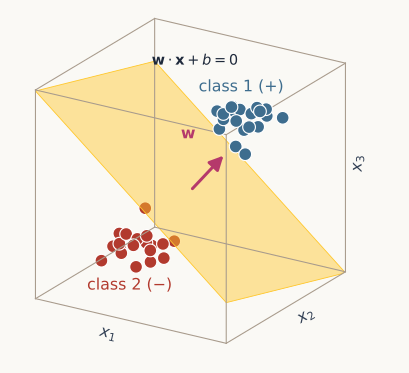
Two clouds of points in the space of three units x1, x2, x3, blue upper right and red lower left, separated by a gold plane labelled w dot x plus b equals 0; an arrow labelled w points from the plane toward the blue points
Open full-size figure
- A linear readout weights the responses, sums them (), and compares the sum with a threshold,
- Its decision boundary, , is a hyperplane of dimension (a line in 2-D, a plane in 3-D). Which side is class 1 is arbitrary
- Fitting the readout places that boundary: and are chosen from labeled responses (how: next week)
- It stands in for a downstream neuron: what it decodes, that neuron could learn. As a test, it is a probe
Slide 4
Where we left off
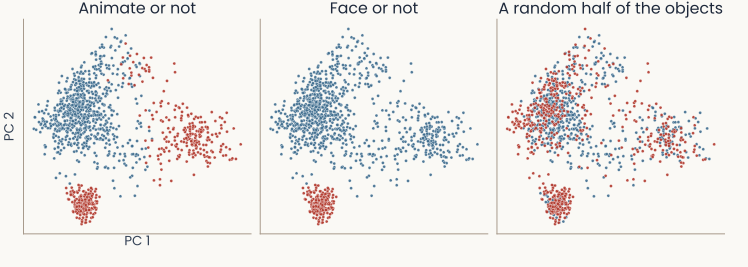
Three panels side by side, each showing the same monkey IT responses to the 1,224 Bao object images on their first two principal components, one point per image, colored by a different split. Animate or not: animate images red, inanimate blue; the inanimate images fill the upper left, the animate ones form two groups, one at the right and one at the bottom. Face or not: only the bottom group is red. A random half of the objects: red and blue points mixed everywhere
Open full-size figure- Each panel shows the same 1,224 images (51 objects × 24 views), each image a point in the first two principal components of 480 IT neurons' responses
- Each panel splits the 51 objects into two classes in a different way, red and blue. Which splits can a linear readout learn?
Slide 5
Where we left off: the readouts
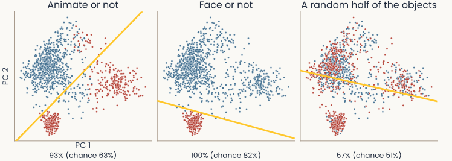
The same three panels with a gold readout line in each and its accuracy on new views under the panel. Animate or not: the line separates most red from blue; 93%, chance 63%. Face or not: the line cuts off the bottom group; 100%, chance 82%. A random half of the objects: red and blue stay mixed on both sides of the line; 57%, chance 51%
Open full-size figure- Animate or not is nearly linearly separable: the readout classifies 93% of new views. Face or not is linearly separable on new views: 100%
- A random labeling (classes by coin flip) is not linearly separable: 57% (chance 51%). All 480 neurons: 99%, 100%, 78%
- How the neurons respond decides which splits a readout can learn
Slide 6
Two properties of a representation: flexible and abstract
| Flexible | Abstract | |
|---|---|---|
| What it means | almost any grouping of the stimuli can be read out | a readout learned on some stimuli still works on stimuli it never saw |
| What it supports | a fixed association from each input to an output | an explicit variable, such as context, that switches the associations |
| Measured by | shattering: how many splits a readout can learn (first half) | CCGP: does one readout carry over to new stimuli (second half) |
First flexibility, then abstraction. The two pull against each other
Slide 8
XOR: not linearly separable
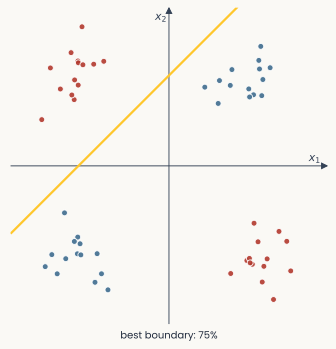
XOR: four noisy groups of points near the corners of a square in the plane of x1 and x2, blue where the two inputs share a sign and red where they differ; the best straight boundary, in gold, classifies 75%
Open full-size figure
- XOR, from the last lecture: two toy units respond to four stimuli, each shown many times with noise
- A point is blue when the two units' responses have the same sign, and red when the signs differ
- No linear boundary can. The best one classifies 75% of the points: three of the four groups
- XOR is not linearly separable
Slide 10
Can separability measure flexibility?
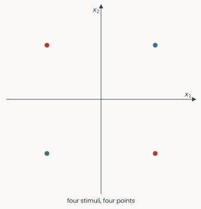
The same panel with each group replaced by one point at its mean: four points at the corners of a square
Open full-size figure
- Flexible: many tasks a downstream neuron could learn from the representation. A task = a split of the stimuli into two groups
- To count them, simplify: each noisy group is one stimulus, shown many times
- Remove the noise: keep one point per stimulus, its mean
- Then count the splits a linear readout can separate
Slide 11
Flexibility: three stimuli, two representations
![Two blocks of eight small panels, one panel per way to color three stimuli blue or red. Top block, Representation A, general position, 8 of 8: the three stimuli at the corners of a triangle, and every panel has a straight line with the blue stimuli on one side and the red on the other. Bottom block, Representation B, three points on one line, 6 of 8: the same three stimuli on a diagonal line; the two panels where the middle stimulus has the other color from both ends have no line and a thick dashed outline](../images/L06/shatter_three_f1.svg)
Two blocks of eight small panels, one panel per way to color three stimuli blue or red. Top block, Representation A, general position, 8 of 8: the three stimuli at the corners of a triangle, and every panel has a straight line with the blue stimuli on one side and the red on the other. Bottom block, Representation B, three points on one line, 6 of 8: the same three stimuli on a diagonal line; the two panels where the middle stimulus has the other color from both ends have no line and a thick dashed outline
Open full-size figure- 3 stimuli give 2³ = 8 splits, or labelings (a random labeling picks one at random)
- Two hypothetical representations of the same 3 stimuli in 2 units, one point per stimulus (its mean response; noise not shown)
- A, points in general position (no three on one line): all 8 splits are linearly separable, so a readout shatters them. B, points on one line: 6 of 8
Slide 12
Higher-dimensional, more flexible
Two blocks of eight small panels, one panel per way to color three stimuli blue or red. Top block, Representation A, general position, 8 of 8: the three stimuli at the corners of a triangle, and every panel has a straight line with the blue stimuli on one side and the red on the other. Bottom block, Representation B, three points on one line, 6 of 8: the same three stimuli on a diagonal line; the two panels where the middle stimulus has the other color from both ends have no line and a thick dashed outline
Open full-size figureSlide 13
Shattering four stimuli: 14 of 16 splits
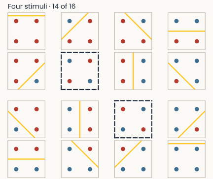
Sixteen small panels in a four by four grid, one for each way to color four stimuli at the corners of a square blue or red, under the header Four stimuli, 14 of 16. Fourteen panels have a straight line separating blue from red. The two panels in which opposite corners share a color have no line and a thick dashed outline
Open full-size figure
- Four stimuli in 2 units, at the corners of a square: 2⁴ = 16 splits
- A linear boundary separates 14 of them. The two it cannot separate are the XOR splits, which put opposite corners together
- Even in general position (no three on one line), four points in a plane give 14 of 16, never more
- With two units, no linear readout shatters four stimuli
Slide 14
Random labels: splits that mean nothing
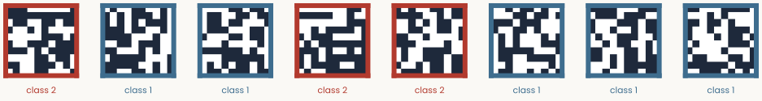
Eight random 10 by 10 pixel images in a row, each pixel black or white. Each image has a colored frame and a label under it: class 2 (red) or class 1 (blue); five are class 1 and three class 2
Open full-size figure- Each stimulus: a random 10 × 10 pixel image (100 units), its class set by a coin flip. Getting the training images right means memorizing them; on new images a readout is at chance
- Capacity: how many random labels a classifier can memorize. A linear readout: about two per dimension (Cover 1965)
- Networks: more weights, more capacity. Zhang et al. (2017): deep networks memorized ImageNet training photos with shuffled labels, and were at chance on new photos
- Shattering measures capacity. Generalizing needs more than capacity: the trade-off between the two is a future lecture
Slide 15
How flexible are neurons in the brain?
Recorded neurons are noisy and many. How many splits can a readout learn from their responses?
Slide 16
Shattering in real brains: two monkey studies
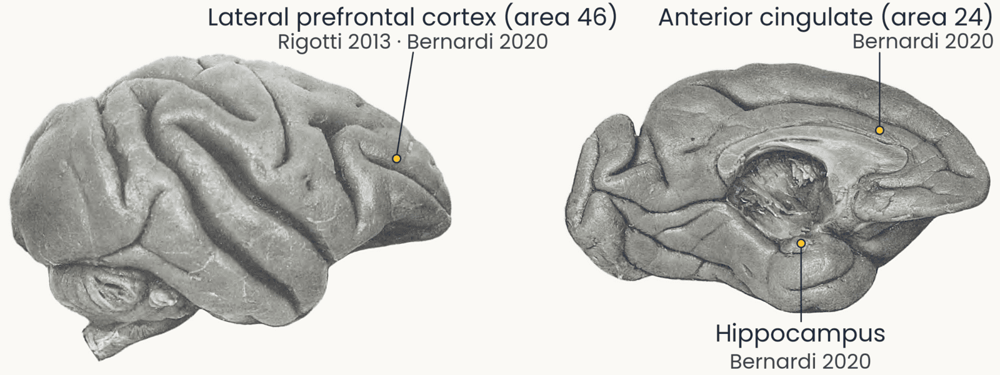
Two photographs of a rhesus monkey brain (Retzius 1906): the outer side and the inner side, front to the right. Three labelled dots mark approximate recording sites: lateral prefrontal cortex (area 46, Rigotti 2013 and Bernardi 2020), anterior cingulate (area 24, Bernardi 2020) and hippocampus (Bernardi 2020)
Open full-size figure
- Prefrontal cortex: rules, working memory. Hippocampus: memory, maps. Anterior cingulate: outcomes, errors
- Rigotti et al. (2013): lateral prefrontal cortex. Bernardi et al. (2020): all three
Slide 19
Simple tuning: one neuron, one variable
![Three panels. Left, V1: one orientation. Original printout of one monkey V1 neuron: total spikes over 10 trials against stimulus orientation, 0 to 348 degrees, with one sharp peak near 80 degrees and a low floor elsewhere. Middle, IT: one kind of object. Bar chart of one IT neuron's mean firing rate to each of 51 objects, grouped by category; the nine face bars reach 14 to 18 spikes per second, and nearly every other bar is below 5. Right, V1: more contrast. Original plot of one V1 neuron's response, as percent of its maximum, against contrast from 0 to about 55 percent: it rises steeply up to about 15 percent contrast, then levels off near 100 percent](../images/L06/simple_tuning_f3.svg)
Three panels. Left, V1: one orientation. Original printout of one monkey V1 neuron: total spikes over 10 trials against stimulus orientation, 0 to 348 degrees, with one sharp peak near 80 degrees and a low floor elsewhere. Middle, IT: one kind of object. Bar chart of one IT neuron's mean firing rate to each of 51 objects, grouped by category; the nine face bars reach 14 to 18 spikes per second, and nearly every other bar is below 5. Right, V1: more contrast. Original plot of one V1 neuron's response, as percent of its maximum, against contrast from 0 to about 55 percent: it rises steeply up to about 15 percent contrast, then levels off near 100 percent
Open full-size figure- V1 (first lecture): fires most for a bar at one orientation
- IT (last lecture): fires for faces, little for anything else
- V1, contrast: the response rises, then levels off (monotonic tuning)
Slide 20
The task: remembering a sequence in prefrontal cortex

Timeline of the sequence-memory task in three left-aligned rows. Sample: remember which two objects, in which order: fixate 1000 ms, object A 500 ms, delay 1000 ms, object C 500 ms, delay 1000 ms. Recognition block, in red: a test sequence A, delay, C; same two objects in the same order, release the bar; different, keep holding. Recall block, in blue: three objects B, A and C around the fixation point; arrow 1 to A, then arrow 2 to C: look at the two objects in the order seen
Open full-size figure- Recognition: keep the two objects in memory and compare them with a test sequence. Recall: plan two eye movements, in order, to the objects in an array
- One task needs a memory to compare, the other a plan of movements. You might expect two separate groups of neurons
- A condition is one combination of the task variables: 4 first × 3 second objects × 2 tasks = 24
- Yet the same prefrontal neurons take part in both. How can one population encode objects and task so that the monkey can switch?
Slide 22
What would one neuron do in this task?
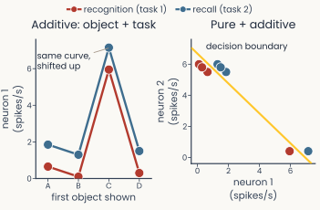
The same two panels with neuron 1 now additive. Left: the blue recall curve is the red recognition curve moved up by 1.2 spikes per second at every object. Right: every blue point moves right by 1.2, and a gold decision boundary from upper left to lower right separates red from blue
Open full-size figure
Hypothetical neurons, synthetic data
- Simple tuning, as in V1 or IT, predicts one tuning curve over the first object
- Pure selectivity: the neuron's response depends on the first object only, so its tuning curves in the two tasks coincide
- Additive mixed selectivity: the task adds the same amount to the response to every object, so the two tuning curves are parallel
- With such a neuron, a linear readout can tell the two tasks apart
Slide 24
The recorded neurons: mixed
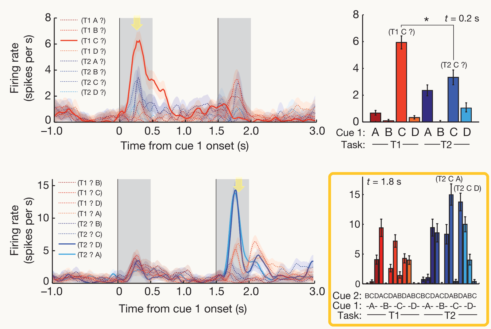
The same Rigotti et al. (2013) Fig. 3, with the lower-right panel outlined in gold: neuron 2 in all 24 conditions, bars per combination of first object, second object and task; in the recall task it fires most when A or D comes second, most of all after C
Open full-size figure
- Recorded prefrontal neurons are neither pure nor additive: how a neuron responds to an object depends on the task
- Nonlinear mixed selectivity: the neuron responds to combinations of object and task, as the product unit of the last lecture (it lifted XOR) responds to combinations of and
- Many prefrontal neurons respond this way. Described by one preferred stimulus, they would make little sense
- Outlined: a second neuron, in all 24 conditions. Its response to the second object depends on the first object and on the task
- Is this mixing noise, or part of the code?
Slide 25
One unit alone: pure and linear units
![Three panels over the plane of x1 and x2, each coloring one unit's response from low (light) to high (dark), with the XOR stimuli as blue (same sign) and red (different signs) dots near the four corners. x1, pure: the response changes from left to right only, gold threshold vertical. x2, pure: from bottom to top only, gold threshold horizontal. x1 plus x2, linear: along the diagonal, gold threshold a diagonal line. Under the panels, how many of the four conditions each unit gets right alone: 50%, 50% and 75%. A colour bar at the right](../images/L06/rigotti_tuning_f1.svg)
Three panels over the plane of x1 and x2, each coloring one unit's response from low (light) to high (dark), with the XOR stimuli as blue (same sign) and red (different signs) dots near the four corners. x1, pure: the response changes from left to right only, gold threshold vertical. x2, pure: from bottom to top only, gold threshold horizontal. x1 plus x2, linear: along the diagonal, gold threshold a diagonal line. Under the panels, how many of the four conditions each unit gets right alone: 50%, 50% and 75%. A colour bar at the right
Open full-size figure- Now and are two task variables (like object and task), not neurons. Each panel is one neuron's response to them; gold, its best threshold
- No pure or linear unit solves XOR alone
Slide 26
One unit alone: nonlinear units
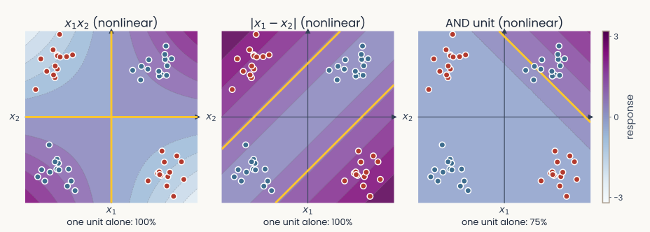
The same layout with three nonlinear units. x1 times x2: high in the two corners where the inputs share a sign, low in the other two; its gold threshold follows both axes and gets 100%. The AND unit, max of 0 and x1 plus x2 minus 1: zero everywhere except toward the upper right corner; 75%. The absolute difference of x1 and x2: zero along the diagonal, high toward the other two corners; 100%
Open full-size figure- Nonlinear mixed units: (the lifting unit of the last lecture) and split XOR alone; AND (a rectified sum) fires when both are high
- AND alone: 3 of 4. Added to and , it makes all 16 splits separable
Slide 27
The response matrix: linear mixing
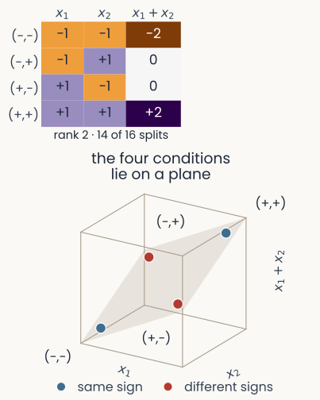
Left, a response matrix with four rows, the four XOR conditions (minus minus, minus plus, plus minus, plus plus), and three columns, the units x1, x2 and x1 plus x2, each cell colored and printed with its value. Under it: rank 2, 14 of 16 splits. Right, the four conditions as points in three dimensions with axes x1, x2 and x1 plus x2, labelled by their corner; all four lie on one tilted plane, drawn lightly
Open full-size figure
- The column is the sum of the other two columns, so the rank stays 2. A linear readout can separate 14 of the 16 splits
- Rank, as last lecture: the number of principal components with nonzero variance. These responses are noiseless, so we can read it off exactly
- A unit whose responses are a weighted sum of the other units' responses never raises the rank
Slide 28
The response matrix: add the lifting unit
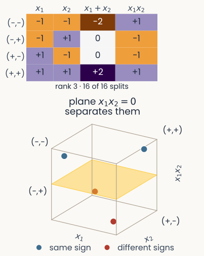
The response matrix with a fourth column, x1 times x2: plus 1, minus 1, minus 1, plus 1. Under it: rank 3, 16 of 16 splits. Right, the points in three dimensions with axes x1, x2 and x1 times x2: the two same-sign corners are raised, the two others lowered, and a plane at x1 times x2 equal to zero separates them
Open full-size figure
- Add , the lifting unit of the last lecture: no weighted sum of the other columns gives it. The rank rises to 3, and all 16 splits are separable
- Its responses are not a weighted sum of the others', so the points leave the plane
Slide 29
The response matrix: add the AND unit
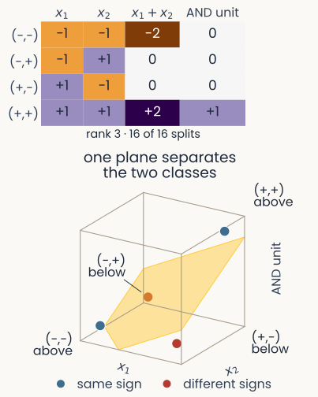
The response matrix with the AND unit as fourth column instead of x1 times x2: 0, 0, 0, 1. Under it: rank 3, 16 of 16 splits. Right, the points in three dimensions with axes x1, x2 and the AND unit: only the plus plus corner is raised, and a tilted plane separates the two same-sign corners from the two others
Open full-size figure
- Put the AND unit in place of . Its responses are not a weighted sum of the others' either: rank 3 again, and all 16 splits are separable
- AND alone cannot do XOR. A readout of all three can: is for same signs and for different signs, so one threshold splits them
- Many nonlinear units raise the rank. The product unit from the last lecture is only one of them
Slide 30
Summary: new units must not be weighted sums
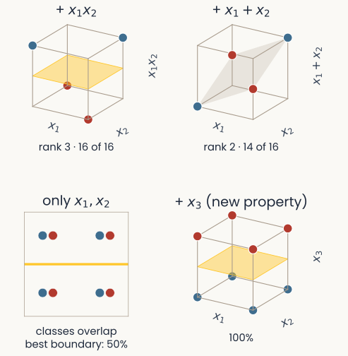
Three panels. The two from before, plus a third: eight stimuli whose red and blue versions share positions in the x1, x2 plane, separated by a new unit x3 that responds to a different property
Open full-size figure
- Top: adding raises the rank to 3 (16 of 16); adding , a weighted sum, leaves it at 2 (14 of 16)
- A unit can also help by responding to something new. Bottom: a linear unit , tuned to a new property, separates stimuli that share positions
- A new unit helps only if its responses are not a weighted sum of the others': then the rank goes up
Slide 31
Mixed neurons make a high-dimensional population
![Rigotti et al. (2013) Fig. 4b, second delay of the sequence task. Line plot against the number of neurons read out, 0 to 4,000. Left axis: number of two-class splits a readout solves, N sub c, on a log scale from 10 to 10 to the 7; right axis: number of dimensions, 6 to 24. Black line, recorded data: rises steadily to about 23 dimensions at 4,000 neurons, just under the dashed maximum of 24. Grey line, simulated pure-selectivity neurons: levels off near 7 dimensions from about 500 neurons on. Error bars on each point](../images/L06/pub_rigotti2013_fig4b_aligned.png)
Rigotti et al. (2013) Fig. 4b, second delay of the sequence task. Line plot against the number of neurons read out, 0 to 4,000. Left axis: number of two-class splits a readout solves, N sub c, on a log scale from 10 to 10 to the 7; right axis: number of dimensions, 6 to 24. Black line, recorded data: rises steadily to about 23 dimensions at 4,000 neurons, just under the dashed maximum of 24. Grey line, simulated pure-selectivity neurons: levels off near 7 dimensions from about 500 neurons on. Error bars on each point
Open full-size figure- Shattering dimensionality counts flexibility: of the number of splits a readout solves (solved: ≥ 75–80% on held-out trials)
- 24 conditions, 2²⁴ splits: solving all of them gives log₂ 2²⁴ = 24, the maximum (dashed line)
- Recorded prefrontal neurons (black): close to 24, almost any grouping is readable
- Pure selectivity, simulated (grey): at most 8 (3 + 3 + 1 directions for the two objects and the task, plus 1)
- Nonlinear mixed selectivity makes the responses of the population high-dimensional
Slide 32
High dimensionality goes with correct choices
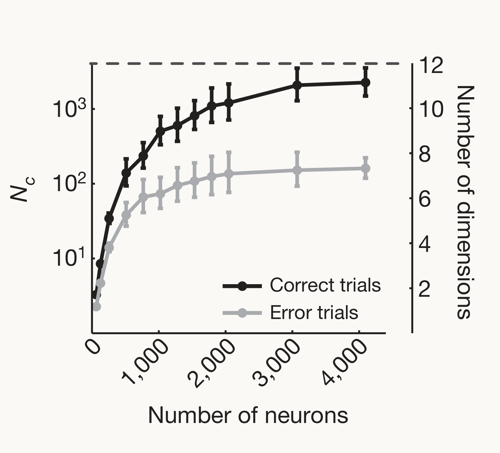
Rigotti et al. (2013) Fig. 5a, recall task. Line plot against the number of neurons read out, 0 to 4,000. Left axis: number of two-class splits a readout solves, N sub c, on a log scale; right axis: number of dimensions, 2 to 12. Black line, correct trials: rises to about 11 dimensions, close to the dashed maximum of 12. Grey line, error trials: levels off near 7. Error bars on each point
Open full-size figure
- Recall task only: 12 conditions, so at most 12 dimensions (dashed line)
- Correct trials (black): close to 12
- Error trials (grey): about 7. The objects can still be decoded, but fewer groupings of the conditions can be read out
- The drop is in the nonlinear mixed part of the responses: remove it and correct and error trials look alike
- On error trials the population is less flexible: the information is there, but not in a form a readout can use
Slide 33
Second property: abstraction
Flexibility counts the groupings a readout can learn. Abstraction asks whether one readout carries over to conditions it never saw
Slide 34
One boundary for objects never seen: CCGP
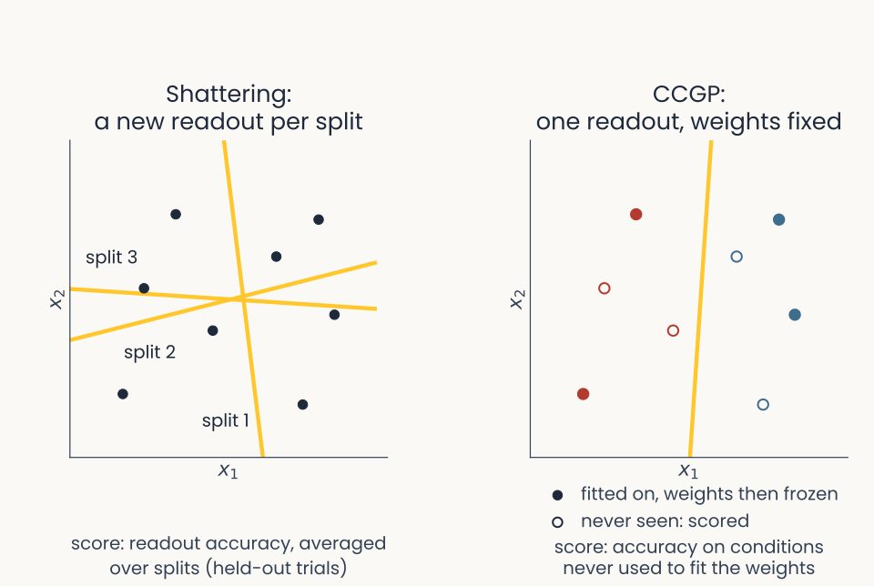
A readout for animate against inanimate is fitted on dogs and chairs, then applied to cats and tables. Left, shattering refits a readout for every task on the same objects; right, CCGP fits once and keeps the weights fixed for objects it never saw
Open full-size figure
- CCGP (cross-condition generalization performance): learn "animate or not" on dogs and chairs, test on cats and tables
- A high CCGP means the code for animacy is abstract: not tied to the objects the readout was trained on, so it carries over to objects never seen (minute paper)
Slide 35
CCGP: when does one boundary transfer?
![Two toy panels in the plane of two units x1 and x2, with noisy clouds. Filled red dots are dogs and filled blue dots chairs; a gold boundary is fitted on them. Hollow red dots are cats and hollow blue dots tables, never used to fit. Left, cats overlap the dogs and tables overlap the chairs; the dog-to-cat shift, shown by a grey arrow, runs along the boundary; on cats and tables the boundary scores 98%. Right, the same dogs, chairs and boundary, but cats and tables are shifted across the boundary; 22%](../images/L06/ccgp_toy.svg)
Two toy panels in the plane of two units x1 and x2, with noisy clouds. Filled red dots are dogs and filled blue dots chairs; a gold boundary is fitted on them. Hollow red dots are cats and hollow blue dots tables, never used to fit. Left, cats overlap the dogs and tables overlap the chairs; the dog-to-cat shift, shown by a grey arrow, runs along the boundary; on cats and tables the boundary scores 98%. Right, the same dogs, chairs and boundary, but cats and tables are shifted across the boundary; 22%
Open full-size figure- Left: cats differ from dogs only along the boundary, a direction the readout ignores: it transfers (98%). Right: across the boundary: it fails (22%)
- Abstract: objects differ only in directions the readout ignores (minute paper)
Slide 36
The task: a hidden context

Schematic of one trial: inter-trial interval 1750 ms, hold the button and fixate 400 ms, one of four images A to D for 500 ms, then hold or release within 900 ms. Below, two tables. Context 1 (red): A release, juice, labelled A plus; B hold, juice; C release, none, labelled C minus; D hold, none. Context 2 (blue): A hold, none, labelled A minus; B release, juice; C hold, juice, labelled C plus; D release, none. Between them: switch every 50 to 70 trials, no cue, inferred from outcomes
Open full-size figureSchematic of the task of Bernardi et al. (2020)
- An uncued context flips the rules. Each variable splits the 8 conditions into two classes
- Memorized associations are not enough: the monkey must hold context as a variable
Slide 37
The monkeys infer the hidden context
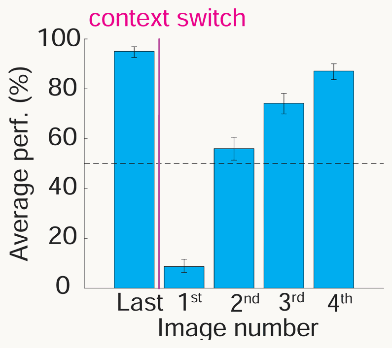
Bernardi et al. (2020) Fig. 1c. Bar chart of average performance in percent, 0 to 100, against image number around a context switch, marked by a magenta line. Last image before the switch: about 95%. First image after it: about 9%. Second, third and fourth images: about 56, 74 and 87%. A dashed line marks 50%, chance for a choice between release and hold. Error bars are 95% confidence intervals
Open full-size figure
- Accuracy on the last image before a switch, then on the first showing of each image after it
- 1st image after the switch: about 9% correct. Nothing warned the monkey
- 2nd to 4th images, not yet seen in the new context: above chance (dashed line, 50%)
- Bernardi et al. call this inference: it suggests a variable for context, coded separately from any one image
- After one surprise, the monkeys switch all the rules
Slide 38
Recall: points in general position split every way
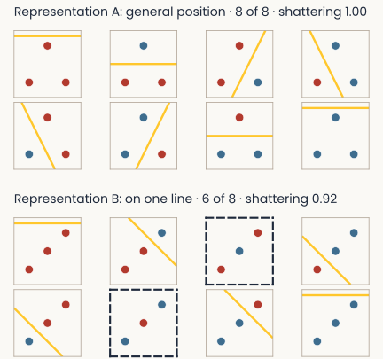
The shattering figure from earlier in the lecture: two blocks of eight small panels, one per way to color three stimuli blue or red. Top, three stimuli in general position: every panel has a line separating blue from red, 8 of 8. Bottom, three stimuli on one line: 6 of 8
Open full-size figure- Earlier: 3 stimuli in 2 units, in general position: a line separates all 8 splits
- One more unit, one more stimulus: 4 conditions at random in 3 neurons can be split all 16 ways by a plane
- Bernardi's shattering accuracy: a readout for every balanced split (3 with 4 conditions, 35 with 8), scored on held-out trials, averaged. 0.5 = guessing
- Next slide: the context split is one of them; the other splits are separable too
Slide 39
Four toy geometries, 1 of 4: points at random
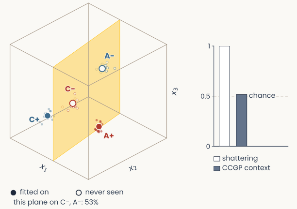
Schematic in the space of three units x1, x2, x3: four conditions A+, C− (red, context 1) and A−, C+ (blue, context 2), each a mean with its noisy trials. A+ and C+ are filled (fitted on), C− and A− hollow (never seen). A gold plane, the context readout fitted on A+ and C+. Bars at right: shattering, CCGP context
Open full-size figure
Cartoon, not recordings: simulated trials, after Bernardi et al. (2020), Fig. 2
- Red/blue: context 1/2. Gold: a context readout fitted on the filled points; hollow: never seen
- Four conditions at random, i.e. in general position, in 3 neurons
- Shattering 1.0: every split is separable. Generalization (CCGP) 0.52: the plane says nothing about C− and A−
- Flexible, not abstract
Slide 40
Four toy geometries, 2 of 4: clustered by context
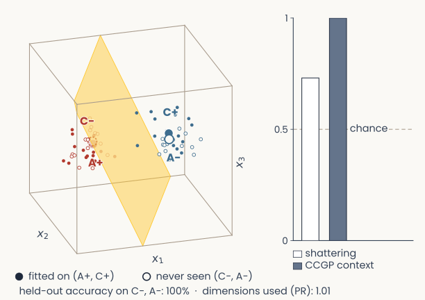
Schematic in the space of three units x1, x2, x3: four conditions A+, C− (red, context 1) and A−, C+ (blue, context 2), each a mean with its noisy trials. A+ and C+ are filled (fitted on), C− and A− hollow (never seen). A gold plane, the context readout fitted on A+ and C+. Bars at right: shattering, CCGP context
Open full-size figure
Cartoon, not recordings: simulated trials, after Bernardi et al. (2020), Fig. 2
- Red/blue: context 1/2. Gold: a context readout fitted on the filled points; hollow: never seen
- Each context's two conditions sit close together
- Generalization (CCGP) 1.0: context transfers. Shattering 0.73: conditions within a context cannot be told apart
- Abstract, not flexible
Slide 41
Four toy geometries, 3 of 4: a square
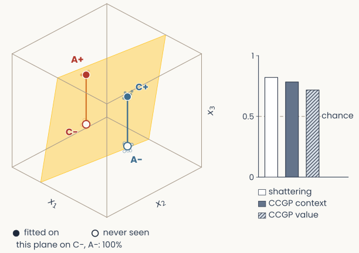
Schematic in the space of three units x1, x2, x3: four conditions A+, C− (red, context 1) and A−, C+ (blue, context 2), each a mean with its noisy trials. A+ and C+ are filled (fitted on), C− and A− hollow (never seen). A gold plane, the context readout fitted on A+ and C+. Bars at right: shattering, CCGP context, CCGP value
Open full-size figure
Cartoon, not recordings: simulated trials, after Bernardi et al. (2020), Fig. 2
- Red/blue: context 1/2. Gold: a context readout fitted on the filled points; hollow: never seen
- Corners of a square: one direction for context, one for value, so a readout for one ignores the other
- Generalization: CCGP 0.78 (context), 0.72 (value). Shattering 0.82: the diagonal split is an XOR and fails
- Abstract, but not fully flexible
Slide 42
Four toy geometries, 4 of 4: a square, bent
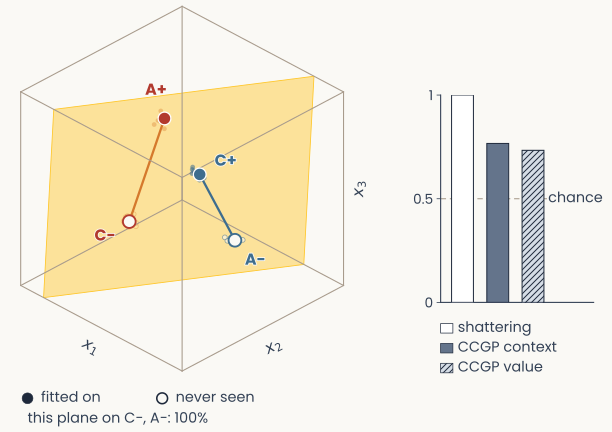
Schematic in the space of three units x1, x2, x3: four conditions A+, C− (red, context 1) and A−, C+ (blue, context 2), each a mean with its noisy trials. A+ and C+ are filled (fitted on), C− and A− hollow (never seen). A gold plane, the context readout fitted on A+ and C+. Bars at right: shattering, CCGP context, CCGP value
Open full-size figure
Cartoon, not recordings: simulated trials, after Bernardi et al. (2020), Fig. 2
- Red/blue: context 1/2. Gold: a context readout fitted on the filled points; hollow: never seen
- The same square, corners pushed out of the plane
- Shattering 1.0: the diagonal split separates too. Generalization still holds: CCGP 0.77, 0.73
- Flexible and abstract at once
Slide 43
Hippocampus: context transfers, action does not
![Bernardi et al. (2020) Fig. 3e. For hippocampus (HPC), dorsolateral prefrontal cortex (DLPFC) and anterior cingulate cortex (ACC), a vertical axis from 0.4 to 1 labelled shattering dimensionality and CCGP, with a dashed line at 0.5. Short black lines mark the measured CCGP of three variables, each on a set of coloured dots from 100 runs of a perfect-cube model: context in red (HPC 0.96, DLPFC 0.74, ACC 0.81), value of the previous trial in purple (0.79, 0.88, 0.94) and action of the previous trial in orange (0.44, 0.75, 0.90). Short grey lines mark the measured shattering dimensionality (0.70, 0.75, 0.74). Clusters of white dots, the cube model's shattering dimensionality, sit lower, at about 0.60, 0.62 and 0.65](../images/L06/pub_bernardi2020_fig3e.png)
Bernardi et al. (2020) Fig. 3e. For hippocampus (HPC), dorsolateral prefrontal cortex (DLPFC) and anterior cingulate cortex (ACC), a vertical axis from 0.4 to 1 labelled shattering dimensionality and CCGP, with a dashed line at 0.5. Short black lines mark the measured CCGP of three variables, each on a set of coloured dots from 100 runs of a perfect-cube model: context in red (HPC 0.96, DLPFC 0.74, ACC 0.81), value of the previous trial in purple (0.79, 0.88, 0.94) and action of the previous trial in orange (0.44, 0.75, 0.90). Short grey lines mark the measured shattering dimensionality (0.70, 0.75, 0.74). Clusters of white dots, the cube model's shattering dimensionality, sit lower, at about 0.60, 0.62 and 0.65
Open full-size figure- Black lines: CCGP. Red: context. Orange: previous action. Purple: value (reward or not)
- Grey lines: shattering accuracy. The dots come from a model (next slide)
- HPC: context CCGP 0.96, previous action 0.44
- Context transfers in all three areas. Previous action in HPC does not
Slide 44
Why both can be high: the compromise geometry
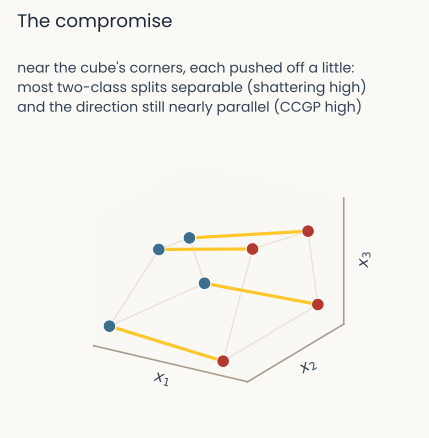
Schematic of the compromise geometry: eight conditions as dots in the space of three units, colored by context, near the corners of a cube but each pushed off a little. Gold edges join conditions that differ only in context and stay nearly parallel; grey edges join the others. Text above: near the cube's corners, each pushed off a little, most two-class tasks solvable (shattering high) and the direction still nearly parallel (CCGP high)
Open full-size figure
- Dots: conditions. Color: context (schematic)
- Cube (Rigotti's linear mixing): each variable adds its own fixed step, whatever the others are. Gold edges: the context step
- Same step everywhere (parallel edges): one boundary per variable works for unseen combinations, high CCGP
- Corners pushed off the cube (nonlinear mixing) make odd groupings solvable (high shattering)
- A perfect cube with the measured CCGPs has lower shattering (white dots, last slide). The recordings sit near the cube, not on it
Slide 45
Try it: flexible or abstract?
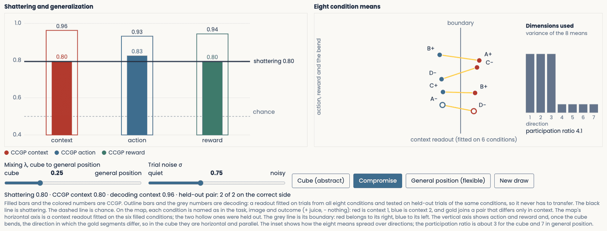
The demo at the compromise setting: shattering accuracy 0.80; CCGP 0.80 for context, 0.83 for action, 0.80 for reward; ordinary decoding 0.93 to 0.96; the gold segments on the condition map are less parallel
Open full-size figure
- Toward random: shattering rises, CCGP falls. Decoding (all conditions in training) stays high
Slide 46
Human hippocampus: context becomes abstract
![Courellis et al. (2024) Fig. 2e–f, hippocampus while the image is on, inference-absent against inference-present sessions. e, decoding accuracy from 0.4 to 0.8 for all 35 ways to split the 8 conditions in half, grey open circles, with named splits in colour: context (red-orange) rises from about 0.57 to 0.72, stim pair (purple) from 0.62 to 0.77, parity (yellow) from 0.54 to 0.64, outcome (blue) falls from 0.62 to 0.56, response (green) rises from 0.46 to 0.50. Black lines mark shattering dimensionality, 0.57 and 0.62 in the text. f, CCGP from 0.3 to 0.7: context rises from about 0.50 to 0.63, stim pair from 0.56 to 0.70, parity from 0.46 to 0.53, outcome falls from 0.56 to 0.41, response stays near 0.36. Grey bars show the 5th to 95th percentile of a null distribution, about 0.40 to 0.60. The legend is at right](../images/L06/pub_courellis2024_fig2ef.png)
Courellis et al. (2024) Fig. 2e–f, hippocampus while the image is on, inference-absent against inference-present sessions. e, decoding accuracy from 0.4 to 0.8 for all 35 ways to split the 8 conditions in half, grey open circles, with named splits in colour: context (red-orange) rises from about 0.57 to 0.72, stim pair (purple) from 0.62 to 0.77, parity (yellow) from 0.54 to 0.64, outcome (blue) falls from 0.62 to 0.56, response (green) rises from 0.46 to 0.50. Black lines mark shattering dimensionality, 0.57 and 0.62 in the text. f, CCGP from 0.3 to 0.7: context rises from about 0.50 to 0.63, stim pair from 0.56 to 0.70, parity from 0.46 to 0.53, outcome falls from 0.56 to 0.41, response stays near 0.36. Grey bars show the 5th to 95th percentile of a null distribution, about 0.40 to 0.60. The legend is at right
Open full-size figure- Patients with implanted electrodes, the monkeys' task. Each dot: one of 35 half-splits of the 8 conditions. Grey: chance
- When people infer the switch, context (red) and stim pair (purple) become abstract
Slide 47
Recap: measures of one population
| Measure | What it says about the representation | Compared with |
|---|---|---|
| Participation ratio | How many dimensions it uses | the number of units , as |
| Readout accuracy | Whether a variable is explicit: available to one weighted sum and a threshold | majority-class baseline |
| Shattering accuracy | How flexible it is: how many different groupings it makes available | guessing, 0.5 |
| CCGP | How abstract it is: whether a variable keeps one format across conditions | chance, 0.5 |
Each score describes one population of neurons or units. How alike are two populations?
Slide 48
By the way: comparing two representations
A tool for Assignment 2, not part of today's story: besides RSA, a second way to compare two systems, CKA
Slide 49
Recall from the MDS lecture: RSA
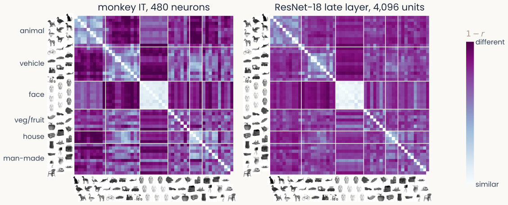
Two 51 by 51 dissimilarity matrices for the same Bao objects in the same category order, with object thumbnails along the edges, from monkey IT (480 neurons, left) and ResNet-18's late layer (4,096 units, right). Both show a light block for faces and lighter blocks within animals and within vehicles
Open full-size figure
Computed: correlation-distance RDMs of the 51 object means, monkey IT (480 neurons) and ResNet-18 late layer (4,096 units)
- One RDM per system: correlation distance (: Pearson) for each pair of objects. RSA: Spearman of the two RDMs, 0.71 here. Only the rank order of distances counts
Slide 50
Another popular score: CKA
- Each builds one matrix per system, then compares the two matrices. They differ at both steps:
| RSA | CKA (centered kernel alignment) | |
|---|---|---|
| 1. Build the matrix | RDM: a distance per pair, here | Gram matrix: a dot product per pair (units centered) |
| 2. Compare the two matrices | rank order (Spearman ) | values (normalized dot product) |
| Unchanged by | any change that keeps the order of the distances | uniform rescaling, rotation of the units |
- Assignment 2 uses both. By convention, CKA is more common for comparing network layers (Kornblith et al. 2019), RSA for brains and judgments
Slide 51
CKA on two networks, block by block
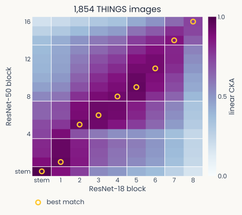
Heatmap of linear CKA between every block of an ImageNet-trained ResNet-18 (x axis, stem and blocks 1 to 8) and ResNet-50 (y axis, stem and blocks 1 to 16), measured on 1,854 THINGS images. A dark band runs from bottom-left to top-right: each ResNet-18 block is most similar to the ResNet-50 block at the same relative depth, marked by gold rings, and early-versus-late pairs are least similar
Open full-size figure
Computed: ResNet-18 vs ResNet-50, 1,854 THINGS images
- ResNet-18 against ResNet-50, every block against every block, 1,854 THINGS images. A block is a group of layers with a skip connection: 8 blocks of 2 layers in ResNet-18, 16 blocks of 3 in ResNet-50
- The highest CKA is between blocks at the same relative depth
Slide 52
Do networks judge objects the way people do?
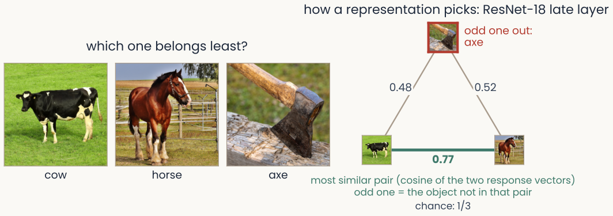
Three THINGS object photographs in a row, a triplet; under them the rule: a representation's odd one out is the object that is not in the most similar pair, by the cosine of the angle between response vectors; a mark shows which object people picked
Open full-size figure
Public-domain THINGS photographs (CC0). Odd-one-out rule applied to ResNet-18's late layer
- Odd-one-out: shown three objects, a person picks the one that belongs least. The THINGS odd-one-out data hold 4.7 million such choices over 1,854 objects (Hebart et al. 2023)
- A network picks the object left out of its most similar pair (cosine similarity). Agreement is the fraction of triplets where network and person pick the same. Chance is 1/3
Slide 53
Papers from today
- Bernardi et al. Cell 2020: hippocampus scores high on shattering and CCGP together
- Rigotti et al. Nature 2013: mixed prefrontal neurons make a high-dimensional population
- Courellis et al. Nature 2024: in the human hippocampus, context becomes abstract with inference
- Johnston & Fusi Nat Commun 2023: networks trained on many tasks learn abstract codes
- Kriegeskorte et al. Front Syst Neurosci 2008: RSA, comparing systems through their RDMs
- Kornblith et al. ICML 2019: CKA finds matching layers in networks of different depth
- Hebart et al. Nat Hum Behav 2020: a few dozen dimensions explain odd-one-out choices
- Muttenthaler et al. ICLR 2023: training data and objective mattered more than network size
Slide 54
Minute paper
Submit on Canvas → Minute papers → Minute Paper 7 (access code read out in class).
Write three brief points in your own words:
- A readout trained to tell dogs from chairs is tested, weights fixed, on cats and tables.
What does a high score tell you about the population, and what is that measure called? - Something you do not yet understand, or a question still open
- Another idea you found interesting, and why it matters for brains, behavior or AI
Credit for a thoughtful attempt, not for being correct.
Slide 55
Appendix
Extra slides: not covered in class, useful for the assignment and the research trail
Slide 56
Not linearly separable: four examples
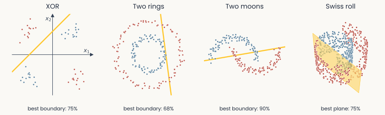
Four panels in a row. XOR: four noisy groups at the corners, a dashed best line, best line 75%. Two rings: a blue inner ring inside a red outer ring, best line 68%. Two moons: two interleaved crescents, blue above and red below, best line 90%. Swiss roll: the rolled sheet in 3-D, the inner half of the sheet blue and the outer half red, best plane 75%
Open full-size figure- Four toy data sets: XOR; two rings; two moons; and the Swiss roll from the lecture on maps, split into the inner and the outer half of the sheet
- In each, no linear decision boundary puts the blue points and the red points on opposite sides
Slide 57
A third unit lifts each one
![The same four examples, each with one new unit. XOR plus x1 times x2: in 3-D the blue groups rise above a gold plane and the red ones drop below it; one plane 100%. Two rings plus x1 squared plus x2 squared: the outer ring rises above the inner ring, and a flat gold plane separates them; 100%. Two moons plus a Gaussian-tuned unit: the points near the unit's preferred point rise, and a tilted gold plane separates the moons; 100%. Swiss roll plus position along the roll: the sheet unrolled flat, position along the roll left to right and height bottom to top, with a vertical gold line splitting it; one threshold 100%](../images/L06/ns_lifted.svg)
The same four examples, each with one new unit. XOR plus x1 times x2: in 3-D the blue groups rise above a gold plane and the red ones drop below it; one plane 100%. Two rings plus x1 squared plus x2 squared: the outer ring rises above the inner ring, and a flat gold plane separates them; 100%. Two moons plus a Gaussian-tuned unit: the points near the unit's preferred point rise, and a tilted gold plane separates the moons; 100%. Swiss roll plus position along the roll: the sheet unrolled flat, position along the roll left to right and height bottom to top, with a vertical gold line splitting it; one threshold 100%
Open full-size figure- Each panel adds one unit that is not a weighted sum of the inputs (named above each panel)
- Position along the roll is the coordinate Isomap recovers when it unrolls the manifold (the t-SNE and UMAP lecture)
- With the right extra unit, a plane separates the two classes in all four data sets
Slide 58
What sets a network's agreement with people?
- Muttenthaler et al. (2023) scored many networks on the THINGS odd-one-out choices
- The training objective and training data mattered more than architecture or size
- Classification accuracy only says on which side of a category boundary each image falls. It does not say how objects are arranged within a category
- Two networks with the same accuracy can differ in how they arrange a category's objects. Odd-one-out choices show the difference
Slide 59
Scaling up: pure and linear populations
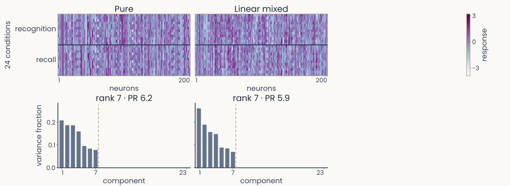
Two columns of panels for 200 simulated neurons in the 24 conditions of the sequence task, a third column left empty. Top row, response matrices, 24 conditions by 200 neurons, recognition rows above recall rows, colored from low to high. Bottom row, scree plots of the variance fraction of components 1 to 23. Pure selectivity: seven bars, then nothing; rank 7, PR 6.2. Linear mixed: seven bars, then nothing; rank 7, PR 5.9
Open full-size figureSimulated: 24 conditions, 200 neurons
- Pure: one variable per neuron. Linear mixed: a weighted sum of all three
- PCA of 24 conditions × 200 noiseless neurons: without nonlinear mixing, only 7 dimensions
Slide 60
Scaling up: a nonlinear mixed population
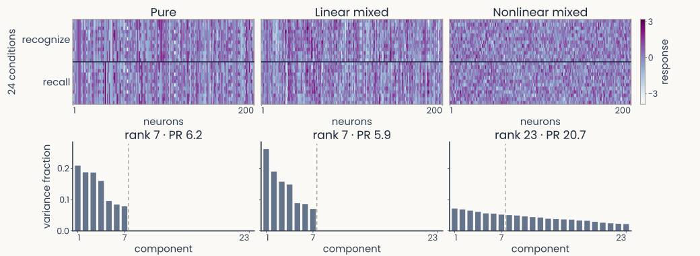
The same panels with the third column filled: nonlinear mixed selectivity. Its response matrix looks as busy as the other two. Its scree plot has 23 bars that fall slowly from 0.07 to 0.02; rank 23, PR 20.7
Open full-size figureSimulated: 24 conditions, 200 neurons
- Nonlinear mixed: its own response to each condition. The matrices look alike
- Only nonlinear mixing uses all 23 dimensions
Slide 61
Can the Theme 1 tools see it? 1 of 3: the cube
![One row of panels for the cube population of the demo model, eight conditions A to H. Distances (RDM): an 8 by 8 matrix of Euclidean distances between condition means, with four distinct distance levels. MDS map: red dots A to D (context 1) and blue dots E to H (context 2) around a ring, short gold segments joining conditions that differ only in context and pointing in different directions; stress 0.24. Scree: three equal bars for components 1 to 3, none after; rank 3, PR 3.0. At right: shattering 0.72, context CCGP 0.95](../images/L06/bern_tools_f1.svg)
One row of panels for the cube population of the demo model, eight conditions A to H. Distances (RDM): an 8 by 8 matrix of Euclidean distances between condition means, with four distinct distance levels. MDS map: red dots A to D (context 1) and blue dots E to H (context 2) around a ring, short gold segments joining conditions that differ only in context and pointing in different directions; stress 0.24. Scree: three equal bars for components 1 to 3, none after; rank 3, PR 3.0. At right: shattering 0.72, context CCGP 0.95
Open full-size figureSimulated: the demo's toy population, 30 units, 8 conditions A–H (context × action × reward)
- Cube (λ = 0): one direction per variable. Gold segments (same action and reward, other context) are parallel
- On the 2-D map those parallel edges are lost (stress 0.24)
Slide 62
Can the Theme 1 tools see it? 2 of 3: the compromise
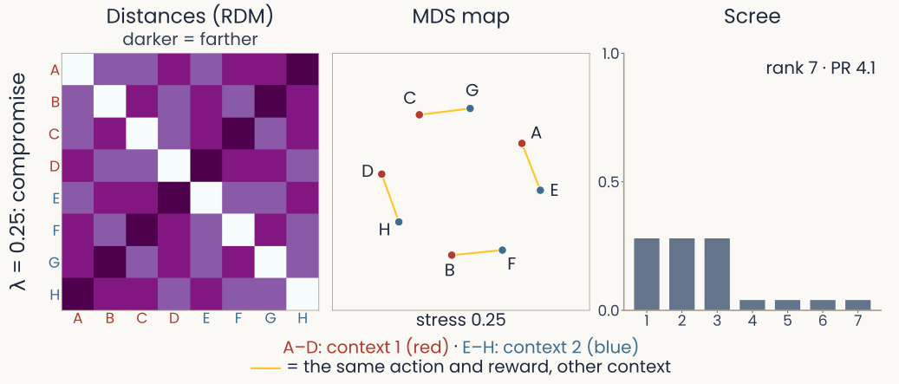
The same row for the compromise population, lambda 0.25. RDM: distances more even. MDS map: again a ring of eight dots with short gold segments; stress 0.25. Scree: three large bars and four small ones; rank 7, PR 4.1. At right: shattering 0.80, context CCGP 0.80
Open full-size figureSimulated: the demo's toy population, 30 units, 8 conditions A–H (context × action × reward)
- Compromise (λ = 0.25): each condition = 0.75 × its cube corner + 0.25 × a random vector
- Shattering rises (0.72 → 0.80), context CCGP falls (0.95 → 0.80)
- The RDM and the map barely change. The readout scores do
Slide 63
Can the Theme 1 tools see it? 3 of 3: random
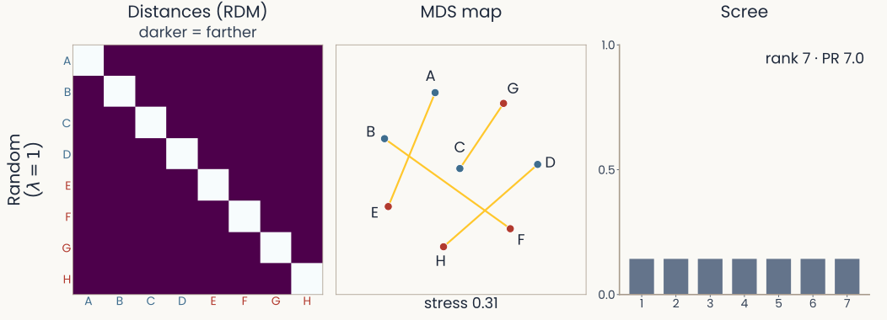
The same row for the random population, lambda 1. RDM: every off-diagonal entry the same, every condition equally far from every other. MDS map: gold segments crossing at odd angles; stress 0.31. Scree: seven equal bars; rank 7, PR 7.0. At right: shattering 0.99, context CCGP 0.51
Open full-size figureSimulated: the demo's toy population, 30 units, 8 conditions A–H (context × action × reward)
- Random (λ = 1): random vectors only; all conditions equally far apart
- Shattering 0.99. Context CCGP 0.51, so nothing transfers
- RDM, map and PR describe the geometry. Only CCGP tests transfer
Slide 64
Single trials in t-SNE: islands mislead
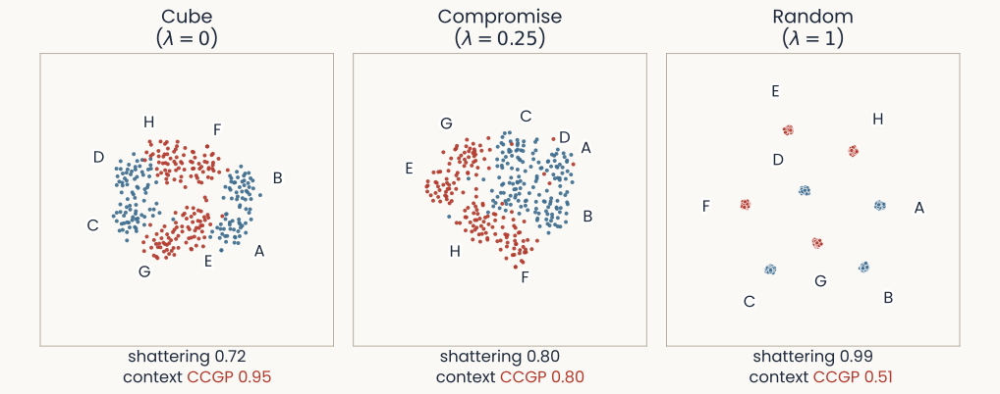
Three t-SNE maps of single trials, 40 per condition, one dot per trial, blue for context minus and red for context plus, each condition's letter beside its group. Cube: the trials form a ring of touching groups, red and blue alternating. Compromise: groups that touch and partly mix. Random: eight tight, well-separated islands. Under the maps: cube shattering 0.72, context CCGP 0.95; compromise 0.80 and 0.80; random 0.99 and 0.51
Open full-size figureSimulated toy population (the three geometries above), single trials; t-SNE perplexity 30
- Random: cleanest islands, nothing transfers (0.51). Cube: islands touch, context transfers best
- A t-SNE map suggests groups. A readout on the responses tests them